Testbericht 9 – Desktop-App, Dateibeobachter, Git, Schnittansicht, CLI↔UI
1 Umfang und Architektur
Die Desktop-Version läuft mit derselben React-App wie der Browser; neu sind die Tauri-App (crates/cad-app), das Backend ohne Tauri (crates/cad-desktop: Engine-Prozess mit Supervisor, Binärformat, Dateien, Beobachter, Git), die lokale IPC (crates/cad-ipc) und im Web TauriTransport, die Desktop-Plattform und die Schnittansicht (Browser und Desktop).
cad datei.scad (App-Prozess, Feature gui)
Hauptthread: Tauri-Ereignisschleife + Webview (React-App, TauriTransport statt Worker)
Befehle: engine_post · open/save/save_as · watch_files · git_hunks · ui_reply · …
Kanal (Tauri 2, roh): binäre Batches ◀──────────── stdout ── cad engine-host (Engine-Prozess)
Supervisor (cad-desktop::engine) ───── stdin: post [ToEngine…] ─▶ Engine-Thread 256 MiB Stack:
Watchdog 15 s: Prozess beenden + neu starten, BlockKeys Session::post / step(16 ms)
cad-watch: notify → file-changed / file-removed SMLib nativ (FFI)
cad-ui-ipc: Unix-Socket ui-<pid> (cad-ipc) ◀── cad ui status | show | screenshot
- Engine: native
cad-sessionmit nativ gelinktem SMLib in einem eigenen Prozess (cad engine-host, dasselbe Binary), darin ein Engine-Thread mit 256 MiB Stack und dieselbe Schleife wie der Worker (Nachrichten posten, einSetSourcevor einem weiteren entfällt, dannstep(16 ms), dazwischen neue Nachrichten). Ein Prozess statt nur eines Threads, weil SMLib und seine C-Fassade globalen Zustand haben (Handle-Tabelle, Meldungen): ein hängender Aufruf lässt sich nur mit dem Prozess beenden, ein Ersatz-Thread daneben teilte den Zustand. Der Watchdog im App-Prozess zählt gesendete und übernommene Nachrichten (seen) und ersetzt die Engine nach 15 s ohne Antwort, mit denselbenBlockKeys/SetFiles/SetContext/SetSourcewieWorkerTransport. - Transport:
EngineTransportbleibt;TauriTransportbündelt UI-Nachrichten je Microtask in einen Befehlengine_post(Reihenfolge bleibt) und empfängt Batches über einen Tauri-2-Kanal alsArrayBuffer:[u32 Kopflänge][u32 Datenlänge][Kopf-JSON][Daten], Mesh-Arrays als{"$b": [offset, länge, typ]}, im Webview Typed-Array-Sichten ohne Kopie. Die Desktop-UI wird ohne Worker und Wasm gebaut (pnpm build:tauri) und ins Binary eingebettet. - Ein Binary:
cadmit Featuregui(Standard).cad,cad datei.scad,cad ordner/starten die UI; ohneDISPLAY/WAYLAND_DISPLAYoder ohnegui: Meldung mit den headless Befehlen, Exit 2. Alle Unterbefehle bleiben. - IPC (
cad-ipc, wiederverwendbar): Endpunkte als Unix-Sockets in$CAD_IPC_DIRbzw.$XDG_RUNTIME_DIR/controller-cadbzw.$TMPDIR/controller-cad-<uid>(Ordner 0700, Eigentümer geprüft, Sockets 0600, Peer-UID geprüft); Rahmen mit Versionsfeldv, Arten Anfrage/Antwort/Ereignis, Binärteil; veraltete Sockets (Verbindung abgewiesen) werden beim Binden, Verbinden und Auflisten entfernt. API:Server::bind(name),Server::serve(handler),connect(name),Conn::request/request_with/respond/send_event/next_event,list(prefix).
2 Entscheidungen
| Thema | Entscheidung | Begründung |
|---|---|---|
| Git-Anbindung | git-Befehl für die HEAD-Fassung (rev-parse, show HEAD:pfad), Diff im Prozess mit similar | Ein Blob je Datei und HEAD-Stand (gecacht, HEAD höchstens alle 5 s neu geprüft); Tippen startet keinen Prozess. git2 bräuchte libgit2 (C-Build), gix brächte weit über hundert Crates in jedes Binary; git ist überall da, wo es Repositories gibt. Unversionierte oder nicht in HEAD enthaltene Dateien: keine Markierung. |
Feature gui | Standard an | Der Workspace enthält cad-app ohnehin (cargo test --workspace baut es), der Mehraufwand sind nur die WebKitGTK-Pakete unter Linux (CI: scripts/ci/desktop.sh deps). Headless: --no-default-features. Ohne web/dist-tauri bettet der Build eine Platzhalterseite ein. |
| Engine | eigener Prozess, darin Thread mit großem Stack | siehe Abschnitt 1 (globaler SMLib-Zustand, Watchdog) |
| Automatisch speichern | Standard aus, Verzögerung einstellbar (1000 ms) | Wer gleichzeitig mit einem Agenten an der Datei arbeitet, soll entscheiden, wann sein Stand auf der Platte landet; die Hinweisleiste schützt beide Seiten. |
| Beobachter | notify auf die Ordner (nicht die Dateien), Inhaltsvergleich per Hash | atomares Speichern (Editoren, cad set) ersetzt die Datei; eigene Speichervorgänge melden den neuen Inhalt vorher an und kommen nie als „extern“ zurück. |
| Neu laden | als kleinste Zeilenänderungen, eigener Undo-Schritt (isolateHistory) | Cursor, Auswahl und Scrollposition bleiben, Strg+Z stellt den eigenen Stand wieder her. |
3 Desktop-App (Tauri-E2E mit tauri-driver und WebKitWebDriver unter Xvfb)
Binary target/release/cad, 11/11 bestanden. Der Lauf startet die echte App mit Datei über WebDriver, ändert Dateien per Shell, benutzt die echte CLI (cad check, cad set, cad ui …) und ein temporäres Git-Repository. tauri-driver lief unter Xvfb stabil; Bilder: WebDriver-Bildschirmfotos des Webviews und ein X-Bildschirmfoto des Fensters.
T01 App startet mit Datei, Szene erscheint (nativer Kernel) bestanden 2.060 ms
- Tauri-Plattform erkannt (TauriTransport, kein Worker)
- Datei aus der Kommandozeile geöffnet
- keine Diagnosen
- Projektordner /tmp/cad-desktop-e2e-BcTy3G/repo
- Meshes binär über den Kanal (102144 Bytes)
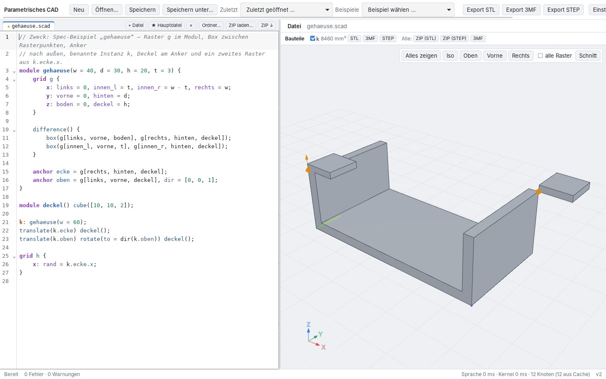
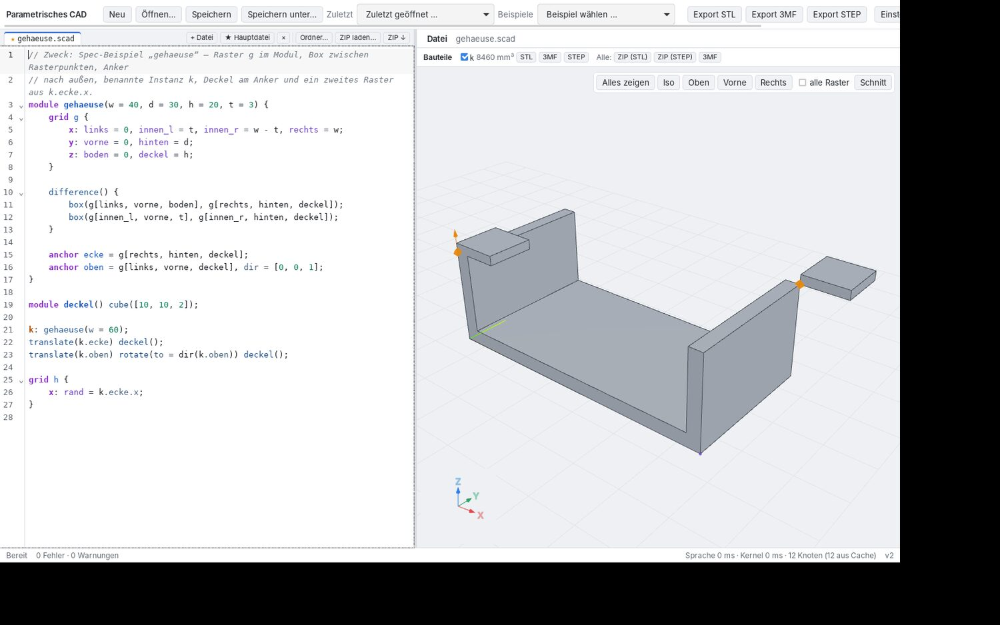
T02 Externe Änderung ohne ungespeicherte Änderungen: still neu geladen, Undo als eigener Schritt bestanden 618 ms
Die Datei wird außerhalb geändert (k: gehaeuse(w = 60) → w = 90), der Editor hat keine ungespeicherten Änderungen.
- Teständerung trifft
- Editor zeigt den neuen Inhalt
- Ansicht ausgewertet
- Cursor bleibt in Zeile 24
- nicht als ungespeichert markiert
- Modell breiter (Hülle x 0…100)
- Rückgängig stellt den alten Stand her (eigener Schritt)
- Wiederholen
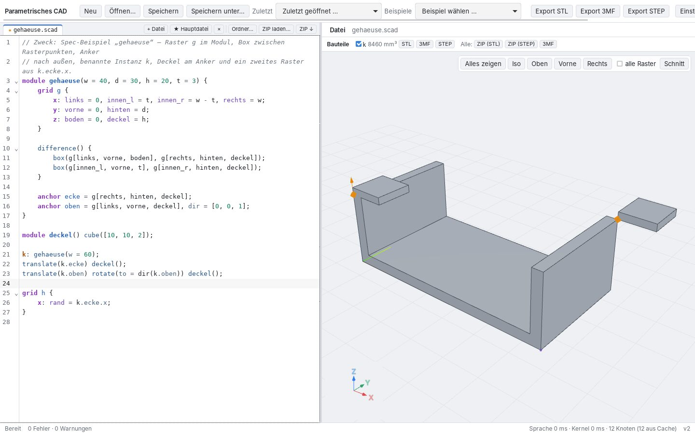
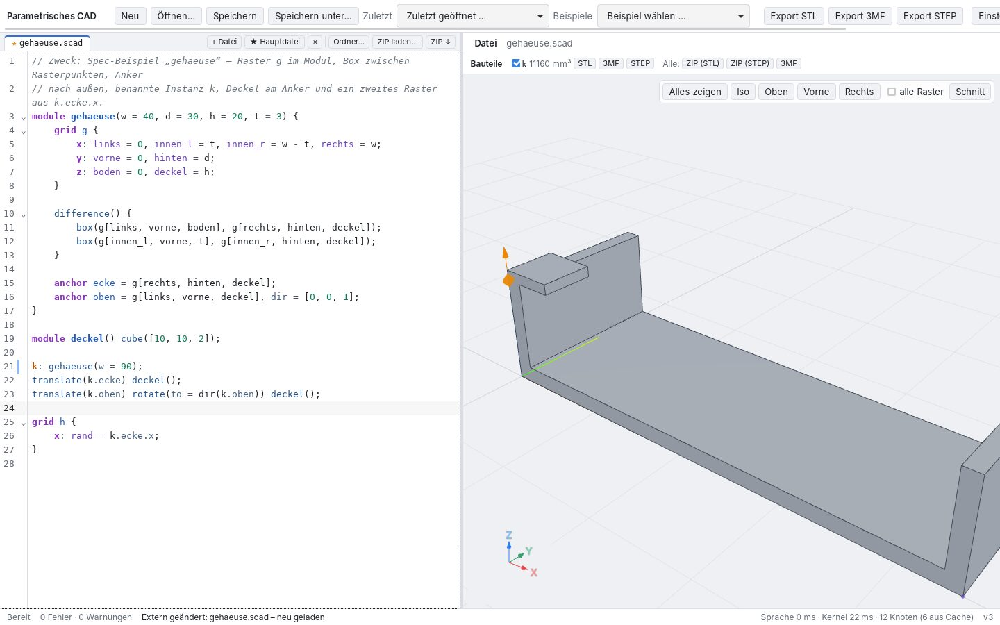
T03 Git-Markierungen am Rand (neu, geändert, gelöscht) bestanden 846 ms
Puffer gegen HEAD: Zeile 21 geändert (blau), eine neue Kommentarzeile (grün), das Modul deckel gelöscht (rotes Dreieck zwischen den Zeilen). Die Markierungen sind 3 px breit mit Deckkraft 0,5–0,55 (hell/dunkel abgestimmt); der Titel (Hover) zeigt die alten Zeilen.
- geänderte Zeile 21 (w = 90) blau markiert
- neue Zeile grün
- gelöschte Zeile als Dreieck
- 3 Markierungen im DOM
- schmaler Balken (≤ 5 px)
- geringe Deckkraft
- Hover zeigt alte Zeilen
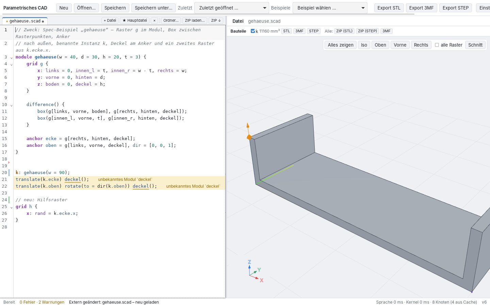
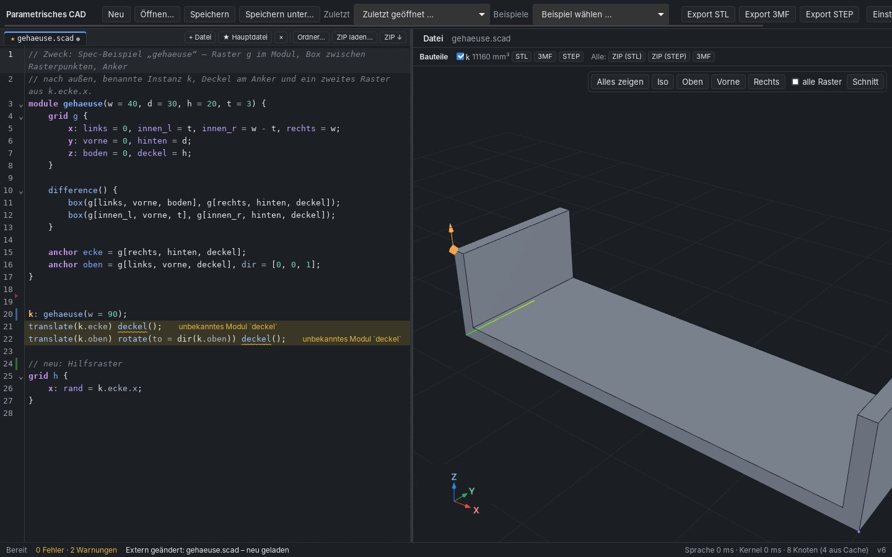
T04 Externe Änderung bei ungespeicherten Änderungen: Hinweisleiste, Vergleichen, Meine behalten, Speichern ohne Schleife bestanden 2.358 ms
- Puffer ist ungespeichert
- Editor behält den eigenen Stand
- Vergleich zeigt + und − Zeilen
- Leiste weg nach „Meine behalten“
- keine Reload-Schleife (Meldung: Gespeichert: gehaeuse.scad)
- keine Hinweisleiste nach dem Speichern
- gespeichert, nicht mehr markiert
- „Neu laden“ übernimmt die Festplatte
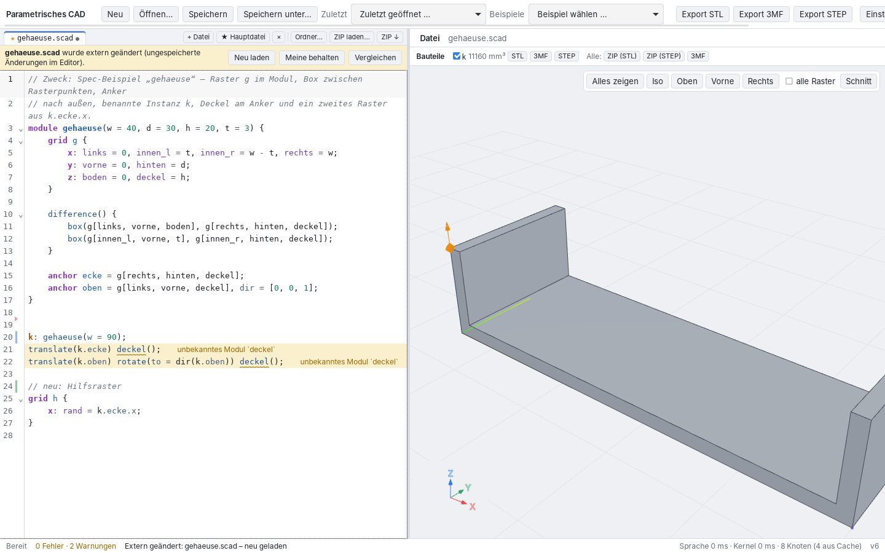
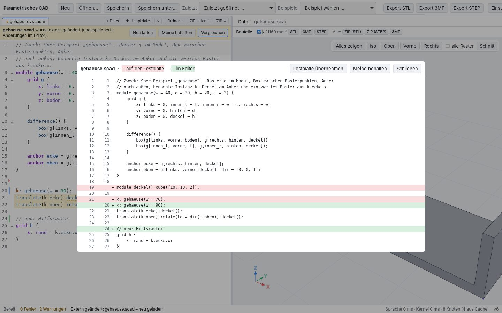
T05 Gelöschte und umbenannte Datei bestanden 1.235 ms
- Speichern legt die Datei wieder an
- keine Leiste mehr
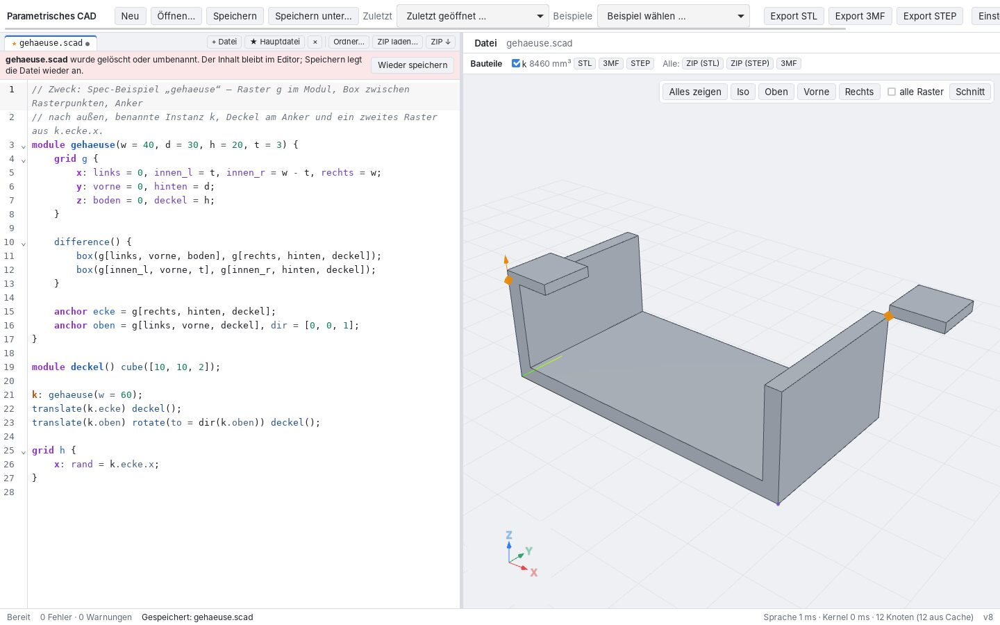
4 Ablauf „Agent ändert Datei → UI aktualisiert sich“
Der Nutzer hat die Datei in der UI offen, ein Agent ändert sie per Shell und prüft mit der CLI. Jedes Bild ist die UI nach dem Schritt, ohne dass in der UI etwas getan wurde. Zeit vom Schreiben bis zur gezeichneten Szene: 232 ms, 249 ms, 188 ms (inkl. cad check/cad set).
T06 Agent-Ablauf: Datei per Shell ändern, `cad check`, UI folgt (Bildfolge) bestanden 983 ms
- `cad check --json`: Exit 0, 0 Fehler
- Editor = Datei nach Schritt 1
- `cad check --json`: Exit 0, 0 Fehler
- Editor = Datei nach Schritt 2
- `cad set --param gehaeuse.h=30`: Exit 0
- Editor = Datei nach Schritt 3
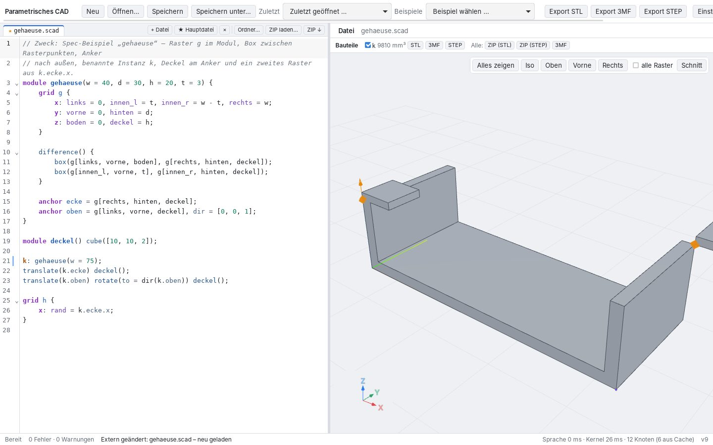
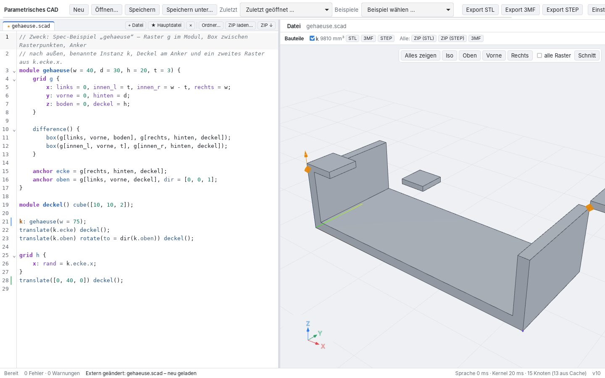
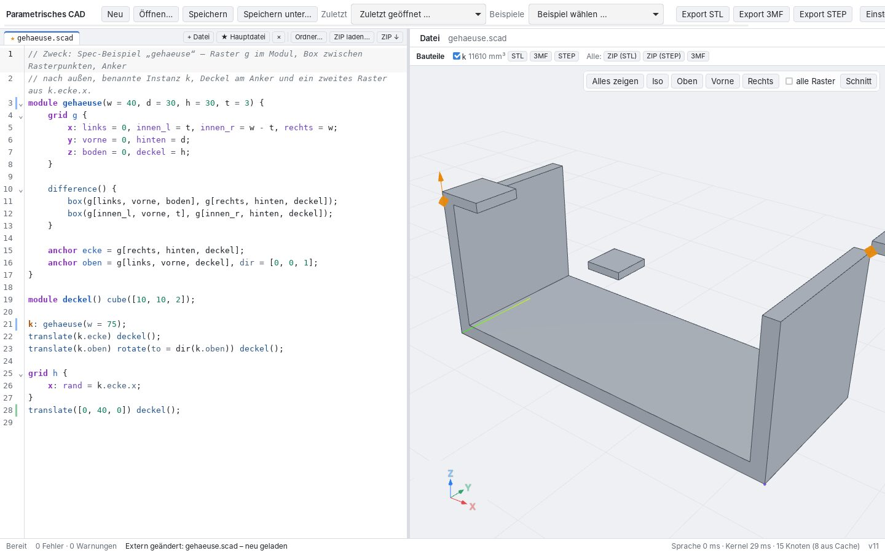
T07 `cad ui status` / `show` / `screenshot` gegen die laufende App bestanden 895 ms
Kopplung CLI ↔ laufende UI über cad-ipc.
- status Exit 0
- offene Datei und Ordner
- Cursorzeile
- show Exit 0
- Cursor in Zeile 11
- status sieht Zeile 11
- Kontextmodul gehaeuse (gehaeuse)
- ausgewählter Knoten {"idx":2,"label":"box","line":11}
- Werte der Parameterleiste
- Diagnosen
- screenshot Exit 0
- PNG 33173 Bytes
- show --module deckel: Kontext deckel
- unbekanntes Modul: Exit 1 („Modul gibtsnicht nicht gefunden“)
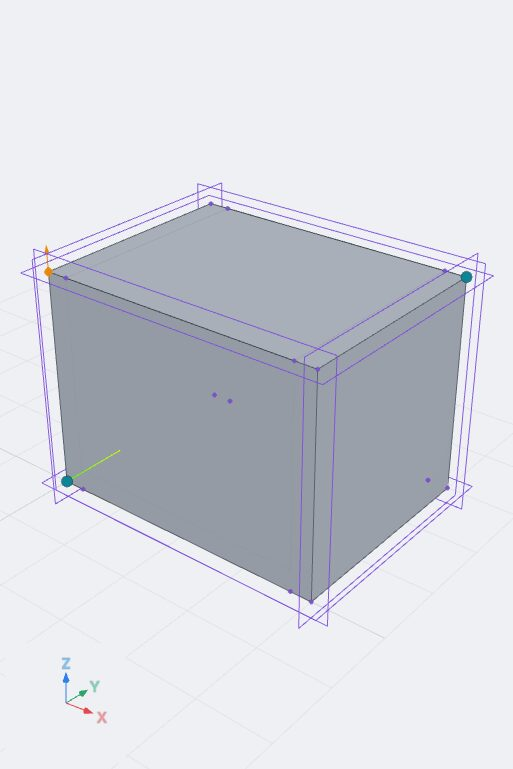
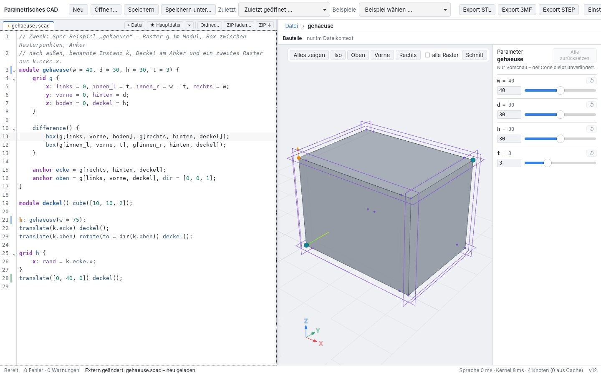
cad ui status:UI pid 11196 (ui-11196) Projekt /tmp/…/repo (Hauptdatei gehaeuse.scad) Dateien: gehaeuse.scad Cursor: gehaeuse.scad Zeile 11 Spalte 1 Auswahl: [2] box Kontext: Modul gehaeuse Parameterleiste: d = 30, h = 30, t = 3, w = 40 Diagnosen: 0 Fehler, 0 Warnungen Szene v12 (vollständig), 4 Knoten
T09 Watchdog in Tauri: hängender Kernel → Engine-Prozess ersetzt, Knoten gesperrt bestanden 7.822 ms
Hängender Kernel (Testnachricht __debugHang im Engine-Prozess, Watchdog für den Test 3 s): (a) im Leerlauf, (b) während eines langsamen Kernel-Jobs (8×8 Bohrungen mit Verrundung, nativ ~3,6 s).
- Engine reagiert seit 3 s nicht (Kernel hängt); Engine neu gestartet, Cache verworfen
- nächste Änderung wird normal ausgewertet
- Engine reagiert seit 3 s nicht (Kernel hängt) (Zeile 1); Engine neu gestartet, Cache verworfen, Knoten gesperrt
- 1 gesperrter Schlüssel
- gesperrter Knoten meldet Fehler (1)
- Szene nach dem Neustart
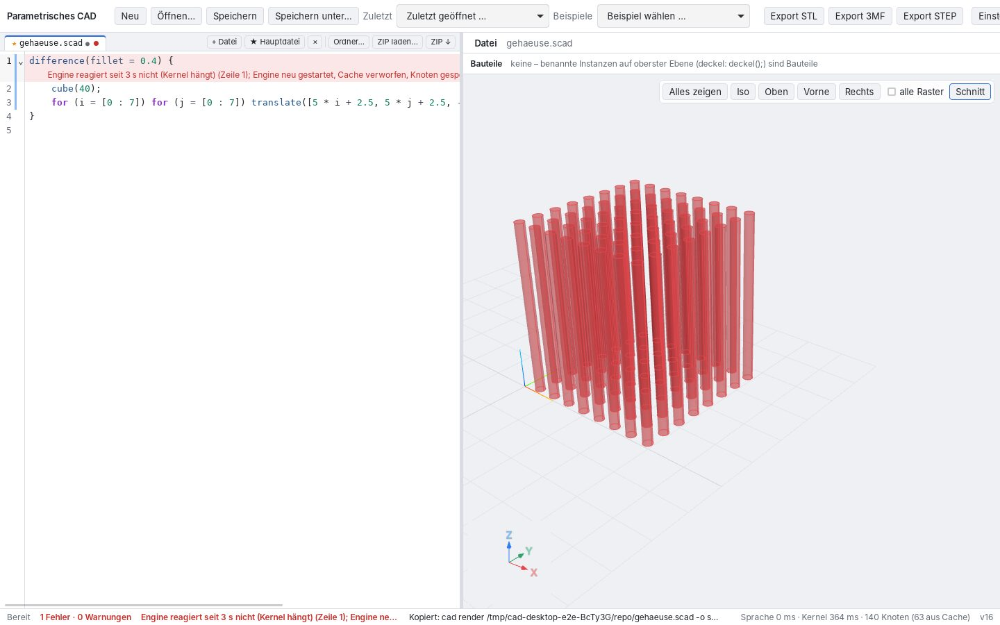
T10 Ordner als Projekt, Autospeichern bestanden 2.786 ms
- Hauptdatei gehaeuse.scad
- 3 Dateien (gehaeuse.scad, konstanten.scad, lib/teile.scad)
- eingebundene Datei neu geladen
- nach dem Autospeichern sauber
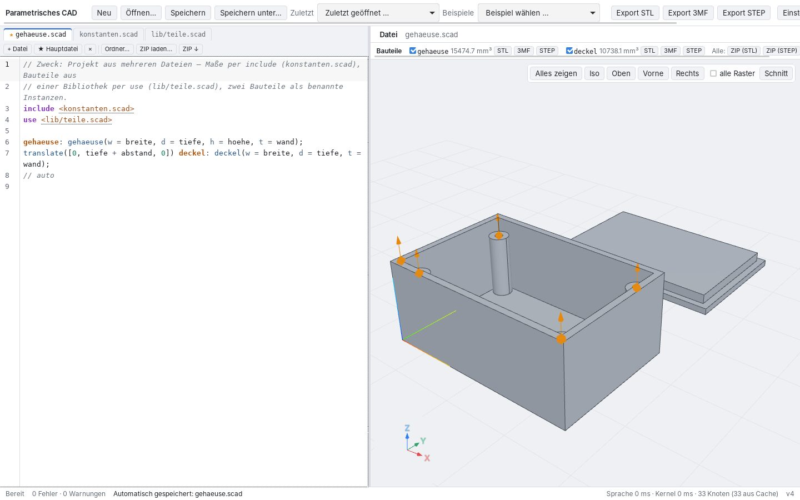
T11 Tastendruck → Szene nativ (Messung) bestanden 7.969 ms
- 8 Messungen
5 3D-Schnittansicht
Werkzeug „Schnitt“ in der Ansicht (Browser und Tauri): Ebene X/Y/Z durch die Modellmitte oder frei (Normale aus der Blickrichtung oder per Eingabe), Griff (blauer Punkt) zum Ziehen entlang der Normalen mit Rasten auf Rasterebenen des Kontextmoduls und auf Anker (Alt: frei, 0,1 mm), Umkehren, gefüllte Kappe und Kontur. Verfahren wie im CLI-Renderer: Clipping-Ebene an allen Modellmaterialien, je undurchsichtigem Körper ein Paritäts-Pass (Stencil INVERT über alle Fragmente des abgeschnittenen Netzes) und ein großes Viereck in der Ebene, das die Kappe zeichnet, wo das Bit gesetzt ist (tiefengetestet, schraffiert, Richtung je Körper wechselnd). Konvention exakt wie cad render --section: Ebene durch p mit Normale n, entfernt wird die Seite, in die n zeigt; „Als cad render … kopieren“ schreibt --section a=v [--section-flip] bzw. --section-plane p,n mit --module und der Kamera (--azimuth/--elevation).
X01 Schnitt z = 11 mit Kappe bestanden
„Schnitt“ in der Ansicht: Ebene z durch die Modellmitte (z = 11), entfernt wird z > 11. Die Schnittfläche ist gefüllt und schraffiert (Stencil-Kappe, Farbe wie im CLI-Renderer), die Kontur als Linie; Statuszeile „Schnitt z = 11 · entfernt z > 11“.
- Kappenpixel vorher 27, nachher 6452
- 1 Körper mit Kappe, 18 Kontursegmente
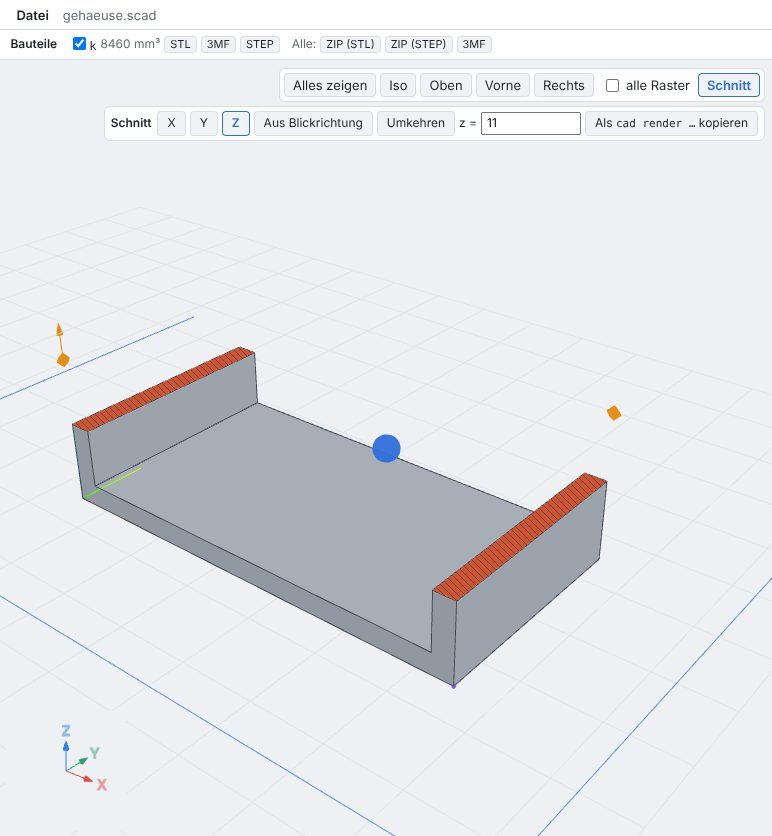
X02 Ebene ziehen und rasten bestanden
Im Modulkontext gehaeuse (Raster g): Griff (blauer Punkt) nach oben gezogen, die Ebene rastet auf g.deckel (z = 20, grünes Etikett), nach unten auf g.boden; mit Alt frei (auf 0,1 mm gerundet).
- Rasten: g.deckel (z = 20), g.boden (z = 0)
- frei: z = 13.4
- fps beim Ziehen: 7, 25, 24
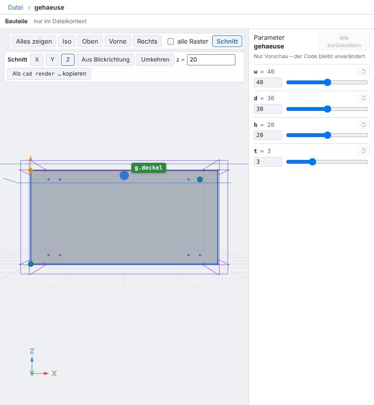
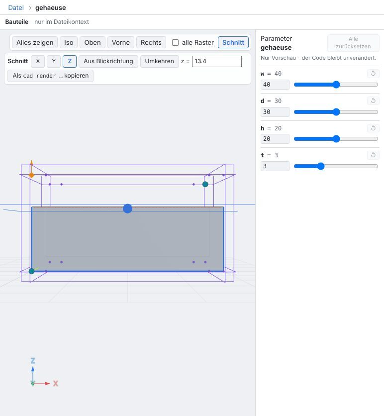
X03 Umkehren, Achsen, freie Ebene bestanden
„Umkehren“ behält die obere Hälfte (n = −z, entspricht --section-flip); X mit Wert 30; „Aus Blickrichtung“ legt eine freie Ebene senkrecht zur Blickrichtung, die Normale lässt sich eingeben (1, 1, 1).
- CLI: cad render gehaeuse.scad -o schnitt.png --section-plane 35,20,11,0.5774,0.5774,0.5774 --azimuth 38.7 --elevation -29.3
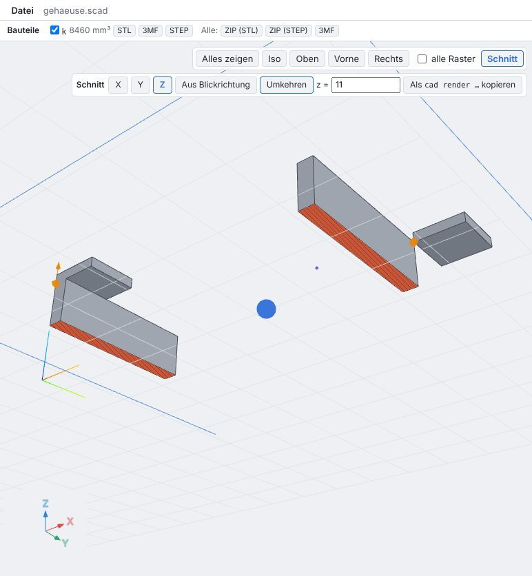
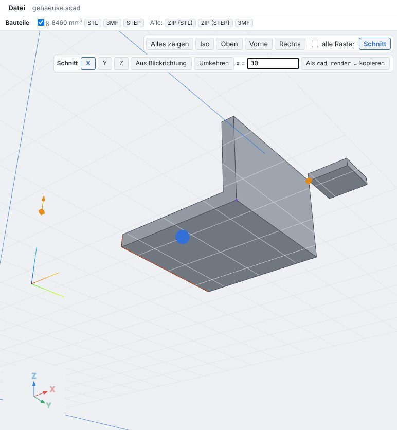
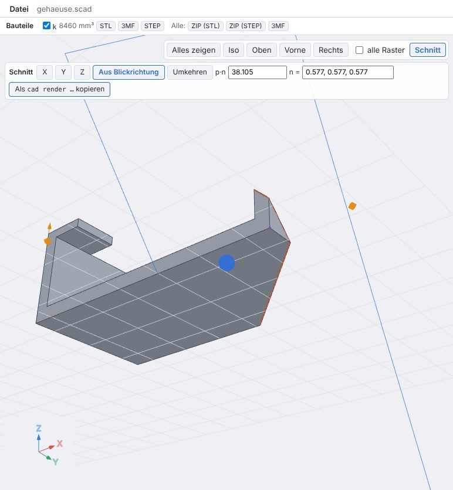
X04 Schnitt zusammen mit Hervorhebung, Zonen, Transparenz bestanden
Cursor auf einer Zeile: deren Körper voll und mit Kappe, der Rest gedimmt (nur abgeschnitten, ohne Kappe); abgezogener Körper rot transparent ohne Kappe; Zone (blau) im Fillet-Beispiel; Griffe bleiben über dem Schnitt.
- Kappen = volle Körper (1)
- 0 Griffe gezeichnet
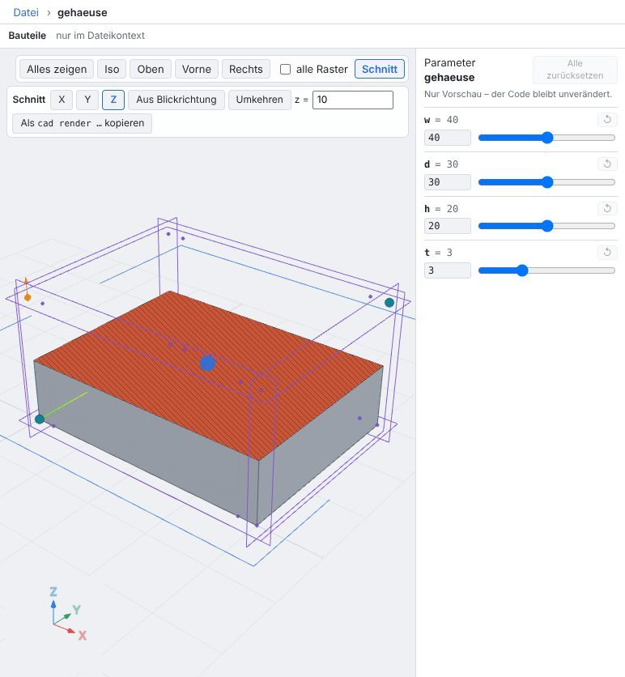
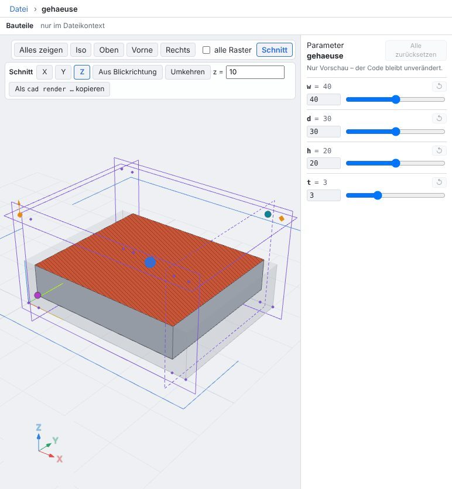
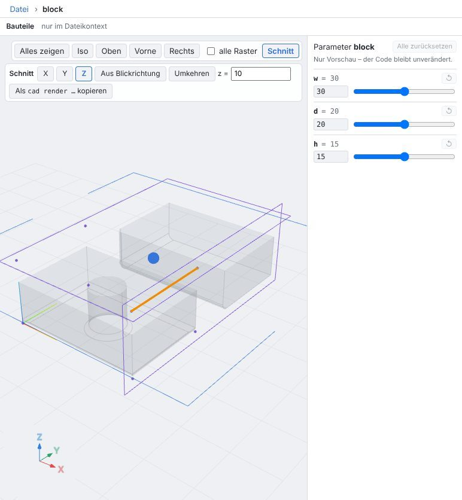
X05 Gleicher Schnitt in UI und CLI bestanden
„Als cad render … kopieren“ ergibt `cad render gehaeuse.scad -o schnitt.png --section z=12 --azimuth 38.7 --elevation 29.3`; in der CLI ausgeführt zeigt das Bild denselben Schnitt (Kappenanteil an den gezeichneten Pixeln UI 6.7 %, CLI 6.2 %, Abweichung 7 %; Perspektive in der UI, orthografisch in der CLI).
- Kappenpixel UI 6429 / 96597, CLI 5335 / 85769
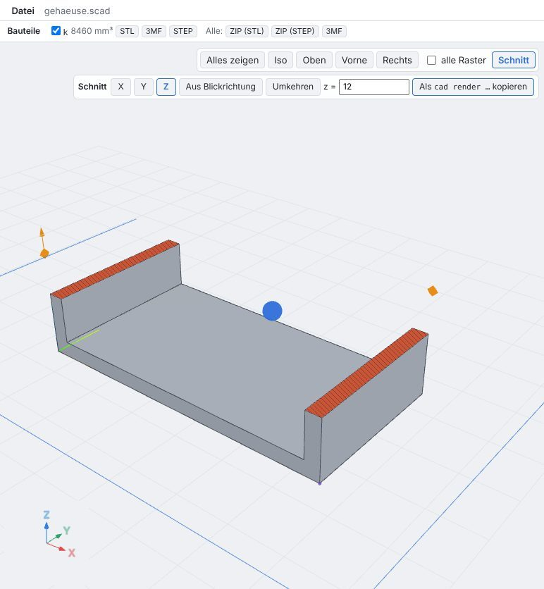
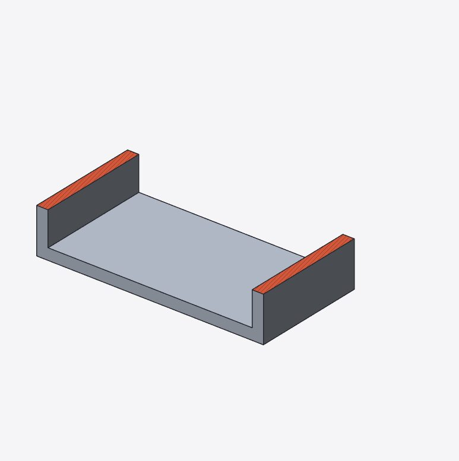
X06 Bildrate beim Schnittziehen bestanden
Ebene 120 Bilder lang verschoben (jedes Bild neue Lage, Kappe und Kontur neu): 12.2 fps in Chromium mit SwiftShader (Software-GL, keine GPU); Drehen mit Schnitt 14.7 fps, ohne Schnitt 21.8 fps – der Schnitt kostet kaum mehr als das Zeichnen selbst.
- 120 Bilder in 9809 ms
T08 Schnittansicht in Tauri (Kappe, Kontur, Ziehen, CLI-Aufruf) bestanden 3.603 ms
- 1 Körper mit Kappe
- 18 Kontursegmente
- Kappe sichtbar (4022 rote Pixel)
- Ebene verschieben: 37.6 fps (WebKitGTK, Software-GL)
- cad render /tmp/cad-desktop-e2e-BcTy3G/repo/gehaeuse.scad -o schnitt.png --section z=16 --azimuth 38.7 --elevation 28.7

Kopierter Aufruf in Tauri: cad render /tmp/…/repo/gehaeuse.scad -o schnitt.png --section z=16 --azimuth 38.7 --elevation 28.7
6 Messwerte
| Messung | Wert | Bemerkung |
|---|---|---|
| Start der App bis erste vollständige Szene | 1.719 ms | WebDriver-Sitzung anlegen (Prozessstart, Webview, Engine-Prozess, SMLib) bis die Szene gezeichnet ist; davon im Webview bis zur ersten Szene 861 ms |
| Tastendruck → Szene, nativ (Tauri) | Median 74 ms (79, 60, 76, 68, 90, 85, 71, 56) | Backspace/Ziffer in w = 60 (gehaeuse), echte Tastendrücke über WebDriver; Zeit von der Editoränderung bis die Szene gezeichnet ist (inkl. 8 ms Entprellung, WebKitGTK mit Software-GL) |
| Tastendruck → Szene, Wasm (Chromium) | Median 34 ms (73, 39, 33, 19, 32, 36, 33, 36) | dieselbe Änderung im Browser (Worker, smlib.wasm), headless Chromium mit SwiftShader |
| davon Engine (SetSource → vollständige Szene) | nativ Median 13 ms, Wasm Median 5 ms | Auswertung und Kernel ohne Zeichnen, gleiche Tastendrücke |
| Kernel-lastige Änderung (16 Bohrungen mit Verrundung, Radius 2 → 2,5 → 3) | nativ 576 / 532 / 551 ms, Wasm 1.273 / 929 / 1.377 ms | SetSource → vollständige Szene; erster Wert inkl. leerem Cache für das neue Modell |
| Externe Änderung → Szene | 178 ms | Datei schreiben bis neue Szene gezeichnet (Entprellung 50 ms im Beobachter) |
| Schnittebene verschieben (Chromium) | 12,2 fps | fillet_zonen, 120 Bilder, jede Lage neu (Kappe, Kontur); Drehen ohne Schnitt 21,8 fps, mit Schnitt 14,7 fps – Software-GL ohne GPU, das 60-fps-Ziel betrifft GPUs |
| Schnittebene verschieben (Tauri) | 37,6 fps | gehaeuse, WebKitGTK unter Xvfb (llvmpipe) |
| Ziehen am Griff (Chromium) | 7 fps, 25 fps, 24 fps | X02: drei echte Mausziehvorgänge (je ~12 Bewegungen), Bildrate der Ansicht während des Ziehens |
| Kappenanteil UI ↔ CLI | 6,7 % / 6,2 % | Anteil der Kappenpixel an den gezeichneten Pixeln, Abweichung 7 % (Grenze 35 %) |
Bei kleinen Änderungen (Tastendruck in gehaeuse, Kernel fast nur aus dem Cache) ist die Desktop-App nicht schneller: die Engine rechnet nur wenige Millisekunden, die Zeit bestimmen Entprellung, der Weg über Tauri-Befehl, Engine-Prozess und Kanal (nativ 13 ms gegen 5 ms im Worker) und das Software-Rendering von WebKitGTK unter Xvfb. Sobald der Kernel rechnet, gewinnt der native Kernel deutlich (Zeile „Kernel-lastige Änderung“). Alle Messungen ohne GPU; nur relativ aussagekräftig.
7 Tests
cargo test --workspace: 338 bestanden, 0 fehlgeschlagen, 0 ignoriert;cargo clippy --workspace --all-targets -- -D warnings: ohne Befund;cargo fmt --check: ohne Befund.- Web:
pnpm typecheckohne Befund; Vitest Tests 186 passed (186) (neu:tauriTransport.test.ts,textDiff.test.ts,section.test.ts); Playwright 77/77 (alle bisherigen 70 Szenarien und 7 neue zur Schnittansicht). - CI: Workflow
rustinstalliert die Tauri-Pakete (scripts/ci/desktop.sh deps), neuer Workflowdesktop(UI für Tauri, Release-Build, Tauri-E2E unter Xvfb, Ergebnisse als Artefakt);actionlint1.7.7 über alle Workflows: ohne Befund.
| Rust-Test (neu) | Datei | Ergebnis |
|---|---|---|
| tests::base64 | unittests src/lib.rs | ok |
| launch::tests::decisions | unittests src/main.rs | ok |
| geom::tests::distance_of_cubes | unittests src/main.rs | ok |
| ui_commands_talk_to_a_running_ui | tests/agent.rs | ok |
| ui_commands_without_running_ui | tests/agent.rs | ok |
| ui_entry_without_display | tests/agent.rs | ok |
| diff_hunks_kinds | tests/backend.rs | ok |
| open_file_loads_includes | tests/backend.rs | ok |
| open_folder_chooses_main | tests/backend.rs | ok |
| atomic_write_and_recent | tests/backend.rs | ok |
| supervisor_evaluates_and_sends_meshes | tests/backend.rs | ok |
| head_base_of_tracked_and_untracked_files | tests/backend.rs | ok |
| wire_batch_has_binary_meshes | tests/backend.rs | ok |
| supervisor_watchdog_when_idle_engine_hangs | tests/backend.rs | ok |
| supervisor_watchdog_replaces_engine_and_blocks_key | tests/backend.rs | ok |
| watcher_reports_external_changes_only | tests/backend.rs | ok |
| frame_roundtrip_with_data | tests/ipc.rs | ok |
| runtime_dir_is_private | tests/ipc.rs | ok |
| stale_socket_is_removed | tests/ipc.rs | ok |
| version_mismatch_is_reported | tests/ipc.rs | ok |
| request_response_events_and_stale_cleanup | tests/ipc.rs | ok |
| serve_handles_requests | tests/ipc.rs | ok |
Backend (cad-desktop/tests/backend.rs): Datei öffnen mit includes, Ordner und Wahl der Hauptdatei, atomares Speichern und zuletzt geöffnet, Beobachter (externe Änderung, eigene Speicherung ignoriert, atomares Ersetzen, gleicher Inhalt, include, fremde Dateien, gelöscht/wieder angelegt, umbenannt), Git-Hunks (Arten, CRLF, Ende) und HEAD-Basis in einem temporären Repository (unversioniert, neuer Commit, Unterordner), Binärformat, Supervisor (Auswertung, Meshes, Watchdog mit Sperre, Watchdog im Leerlauf). IPC (cad-ipc/tests/ipc.rs): Rahmen, Version, Anfrage/Antwort/Ereignis, veraltete Sockets, Rechte, mehrere Clients. CLI (agent.rs, launch.rs): kein Display → Exit 2 + Meldung, cad ui … ohne UI → Exit 3, cad ui gegen einen Test-Endpunkt.
8 Bekannte Grenzen
- Steuer-IPC nur unter Unix (Linux, macOS); unter Windows meldet
cad-ipc„nicht umgesetzt“ (Named Pipes fehlen), die App selbst ist dort ungetestet. Ein Fenster je App-Prozess;cad datei.scadstartet einen weiteren Prozess statt das laufende Fenster zu nutzen (cad ui showtut das). - Watchdog-Tests blockieren den Engine-Prozess über eine Testnachricht; ein echter hängender SMLib-Aufruf wurde nicht nachgestellt. Die Sperre gilt bis zum Neustart der App.
- Beobachter: Umbenennen erscheint als Löschen (Leiste „gelöscht oder umbenannt“), der neue Name wird nicht verfolgt; eine externe Änderung auf genau den Inhalt der UI bleibt (gewollt) unbemerkt.
- Git nur gegen HEAD (nicht gegen den Index), über den
git-Befehl; ohnegitkeine Markierungen. - Native Dialoge (Öffnen, Ordner, Speichern unter) sind in den E2E-Tests nicht automatisiert; geprüft sind Öffnen über die Kommandozeile,
cad ui show, zuletzt geöffnet (Rust) und Speichern. - Schnitt: eine Ebene; Kappen nur für undurchsichtige, geschlossene Körper; Kontur auf der CPU je Lage; Griffe, Raster und Anker werden nicht abgeschnitten. Der kopierte CLI-Aufruf trifft Schnitt und Blickrichtung, nicht den Bildausschnitt (UI perspektivisch, CLI orthografisch).
- Messwerte ohne GPU (Xvfb/llvmpipe, SwiftShader).